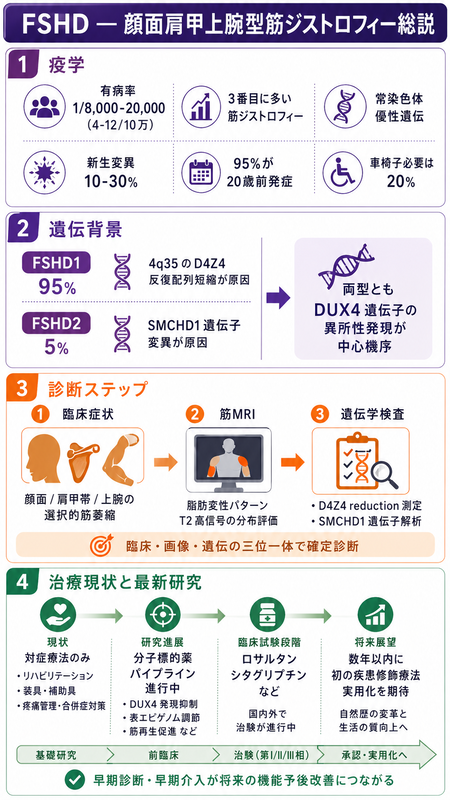

顔面肩甲上腕型筋ジストロフィー（FSHD）概説：疫学・遺伝背景・診断・治療の最新知見
記事全体の要点をまとめた図解です。数値・対象・限界は解説記事の本文と参考文献をご確認ください。

2026年4月作成の図です。図中の「有病率1/8,000〜20,000（4〜12/10万）」は換算が合わず、記事では10万人あたり5〜12人としています。「95%が20歳前発症」、臨床試験段階の薬剤名（ロサルタン・シタグリプチン）、「数年以内に初の疾患修飾療法実用化を期待」、「早期診断・早期介入が将来の機能予後改善につながる」は記事で扱っておらず、出典で確認していません。また、典型的な臨床像があれば遺伝学的検査で確定でき、筋MRIは診断に必須ではありません。ロスマピモドの第3相試験の結果と次世代の核酸医薬は、記事の本文をご覧ください。
画像を原寸で開く